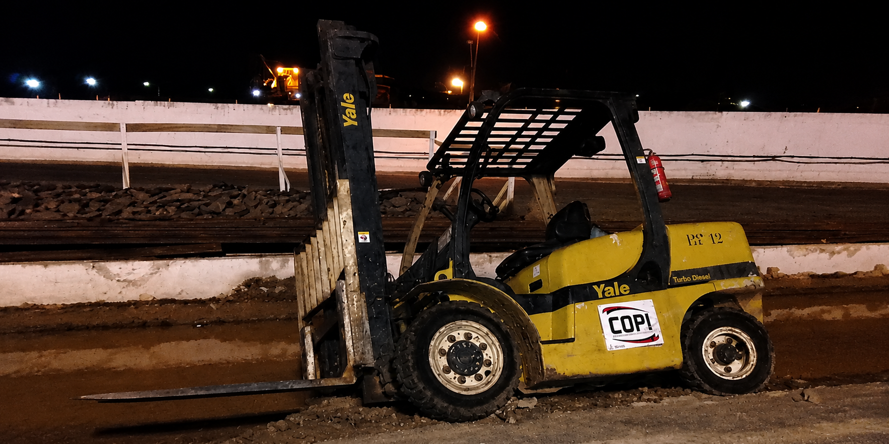

Domingo 22/03/2013
Raimundo Nonato Carneiro Soares de 38 anos, funcionário da Companhia Operadora do Itaqui (COPI), operava uma empilhadeira em uma área pouco iluminada e em reforma.
Ao fazer uma manobra em direção ao Berço 102, ele não percebeu a existência de um buraco e caiu. O veículo acabou tombando por cima do seu corpo.

Em julho, Luiz Carlos Diniz morreu atropelado por uma empilhadeira no berço 100 durante uma operação de apoio à retirada da plataforma Seporion que adernou em 30 de setembro de 2012.
Prevenções
Iluminação da empilhadeira, isolamento da área, comunicação quando está sendo feita alguma manutenção na empresa, sempre fazer o check-list do equipamento e o uso de EPIs.